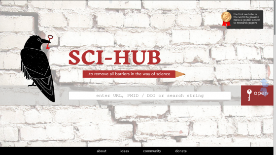
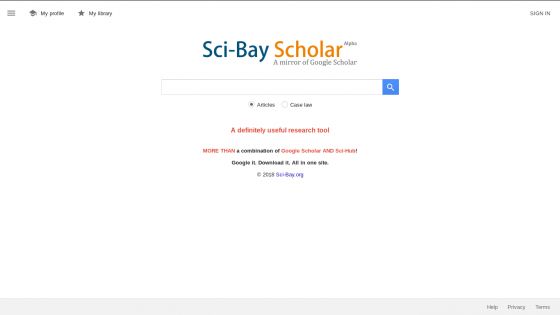
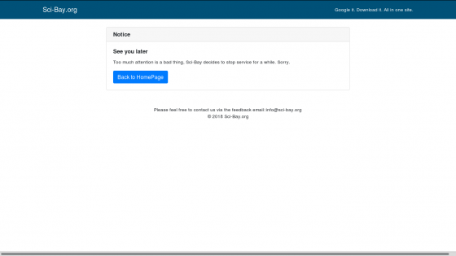

O Sci-Hub oferece acesso aberto aos milhões de artigos publicados por pesquisadores de todo o mundo
A popularidade do Sci-Hub custou caro a Elbakyan, condenada a pagar milhões de dólares para editores que, como a Elsevier, denunciaram por violar seus direitos de propriedade intelectual. Como outras empresas do setor, a gigante editorial, que publica periódicos de prestígio como The Lancet ou Cell, defende o lucrativo modelo tradicional em que os cientistas pagam para publicar suas obras - normalmente financiadas por fundos públicos - ao mesmo tempo. Eles revisam os artigos de seus colegas gratuitamente antes de serem publicados nessas revistas e depois pagam para poder ler e acessar esses mesmos estudos.{kind=link}
O Sci-Hub oferece acesso aberto aos milhões de artigos publicados por pesquisadores de todo o mundo
A situação insustentável, criticada por milhares de pesquisadores em todo o mundo, explica em parte o sucesso alcançado pela Sci-Hub. A ferramenta permite acesso gratuito a mais de 60 milhões de artigos; uma estratégia que, nas palavras da própria Alexandra Elbakyan, supõe um "roubo aos editores para dar aos cientistas". No entanto, os diferentes confrontos legais dos últimos meses não só levaram a condenações de milhões de dólares, mas os tribunais também ordenaram o bloqueio do serviço. O Sci-Hub, cuja operação agora é ilegal, teve que mudar seu domínio em várias ocasiões, desenvolver seu próprio bot Telegram e até mesmo operar a partir da deep web. Mas a rebelião no mundo acadêmico continua: o último marco é Sci-Bay, que nasceu para aparentemente aliviar a barra da plataforma planejada por Elbakyan.
Nasce o Sci-Bay
O Sci-Bay tem uma aparência semelhante à do Google Acadêmico, um dos mecanismos de busca acadêmicos mais usados ​​para encontrar artigos de uma determinada disciplina. A nova ferramenta que visa aposentar o Sci-Hub não tem nenhuma relação com o Google, e até mesmo sua home page alerta os usuários de que é uma réplica do popular serviço acadêmico oferecido pela Mountain View. Uma vez que o interessado encontre o estudo desejado, seguindo um padrão muito semelhante ao mostrado pelo Google, é possível acessar diretamente o artigo através do Sci-Hub ou de outras ferramentas como o LibGen. 
Nasce o Sci-Bay: A fus√£o do Google Academy com o Sci-Hub
O novo serviço, cuja operação continua em choque com os direitos de propriedade intelectual alegados pelos editores, também permite uma busca da jurisprudência e concessão de patentes, além de explorar fontes bibliográficas interessantes. Sci-Bay, finalmente, oferece a possibilidade de salvar trabalhos para ler mais tarde, consultar métricas e registrar o próprio perfil do usuário, embora essas duas opções pareçam não estar disponíveis no momento da publicação deste artigo devido a problemas no servidor. No momento não se sabe quem está por trás dessa plataforma que mistura o Sci-Hub e o Google Scholar. Os dados do proprietário do domínio, que geralmente são conhecidos através do Whois, são protegidos por uma empresa com sede no Panamá chamada WhoisGuard, com o objetivo de preservar o anonimato dos promotores de Sci-Bay.{kind=link}
Nasce o Sci-Bay: A fus√£o do Google Academy com o Sci-Hub
Atualização (27 de março de 2018):
Menos de 24 horas depois desse artigo ter sido publicado o site Sci-Bay saiu do ar deixando o seguinte aviso: "Muita atenção é uma coisa ruim, o Sci-Bay decidiu parar o serviço por um tempo. Desculpa."

"Muita atenção é uma coisa ruim, o Sci-Bay decidiu parar o serviço por um tempo. Desculpa."
{kind=link}
"Muita atenção é uma coisa ruim, o Sci-Bay decidiu parar o serviço por um tempo. Desculpa."
Veja também:
- Programadores preferem programar para Linux e MySQL
- Como recuperar o bot√£o 'ver imagem' do Google
- A Lei de Moore nas palavras de Gordon Moore
- Conheça as novidades do HTML 5.2
- As 3 Ondas da Inteligência Artificial
Fonte:
21/Mar/2018 20:15:54